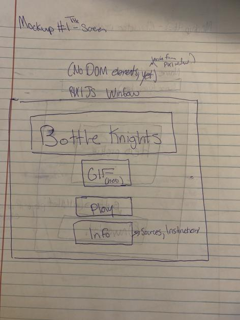
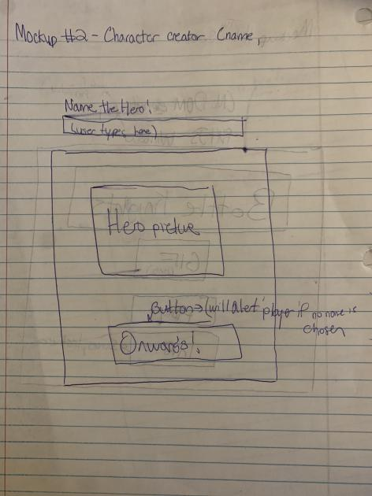
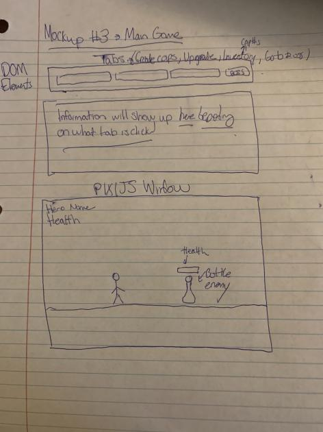

Skip to documentation...
About Bottle Knights
Bottle Knights will be a rougelike-incremental game, in which the player interacts with DOM elements to generate bottle caps, which can be refined to upgrade their hero (gear, armor, etc). In a separate PIXI window, the hero can be seen fighting enemies, which generates more bottlecaps for the player. When the player deems they are prepared, they can fight a boss in hopes to unlock better progression, and move on to another area. If the player falls to a monster or boss, they will need to restart from the beginning with a new character.
Genre: rougelike-incremental
Platforms: Web
Story
Bottle Knights is set in a world where something as useless as a bottle cap can be combined to greatly strengthen a hero on their conquest to rid the world from sentient bottles.
Aesthetic
I am planning to have a cartoon-y style for my entities and background environment (PIXI Window). For DOM Elements, I am planning to create a style that fits the aesthetic of traditional bottles, or bottle caps (gray plastic, red bottlecap, etc).
Gameplay
With this being partially an incrememntal game, the player will need to manage the intake of bottle caps using the DOM elements found on screen. Along with this, the player needs to manage the equipment and strength of the main hero. In game game window, the hero fights with the enemies by iself indefinitely, and will continue to a boss when the player decides to move on. The scope of this project will most likely only include the introductory segments of the game (i.e. the basic enemies and first boss), and will include several tooltips and labels to guide the player towards functionality.
Mockups
  Other
I am planning to use Professor Chin's PIXIJS tutorial series to aid my development, as well as PIXIJS and Howler JS as libraries.
About the developer
My name is Sami Chamberlain, and I'm a second year game design and development student at the Rochester Institute of Technology. I am proficient in multiple languages, including C#, JavaScript, HTML, and CSS. I have an interest in storytelling, and creating unforgettable experiences through digital media applications. I want to be the inspiration for others just as those who inspired me.
Instructions
The player will navigate through a set amount of tabs to upgrade their character, strategically using their loot to survive the bottles that they are battling. There is no keyboard input, and the game solely uses the mouse.
Documentation
Goal
I am planning to create an incremental-rougelite that tries to put as much as an emphasis on the DOM when compared to the PIXIJS window. This game will be infinite, and will require the player to strategically upgrade their character to defeat enemies.
Audience
I am planning to make this game appeal to anyone who is interested in this genre, as well as those who may be unfamiliar with incrementals or roguelites. I will be sure to explain most aspects of the game, such as the player stats and what upgrades actually do.
Process
- Starting off, I worked on the menu mechanics, as well as the character creation window
- Next, I finihed the main UI functionality within the main game
- After this I created multiple helper classes that are used several times to display Information on the PIXIJS window (Label, Button, etc)
- Then, I created most of the player and enemy logic (that being the attack, dodge, and death sequences)
- After completing the basics, I started factoring in player skills to the calculations to weight certain aspects.
- After this, I started working on getting the currency working
- Then, after the shop was working, I started working on various upgrades, such as cap factories.
- After this was complete, I worked on player animations and sound
- Parallax scrolling came next, which was taught by Professor Chin's PIXIJS series
- After, I did some general polishing and gave descriptions to each of the player stats and upgrades
- After, I worked on the final boss of the game, El Capo, and added a victory condition!
- Finally, I adjusted the RNG and rates to make a fair and enjoyable experience.
Sources
Fonts:
Medieval Sharp
Balthazar
Sprites:
Esquire
Recycle Items Set by Clint Bellanger
Parallax background by ansimuz
Bottle cap image
Sword slash image
Sound Effects and Music:
Airships Main Theme by joeBaxterWebb
Shield Sound Effect
Player and Enemy damage sound effects are from Undertale, by Toby Fox.
Critical Hit sound effect is from Fire Emblem, The Binding Blade (2002), by Nintendo.
UI Button sound effect
Error sound effect
Enemy slain sound effect
Boss music by Matthew Pablo
Low Health sound effect from Pokemon Emerald Version, by Nintendo.
How I met qualifications
ES6 Classes: My project has multiple ES6 classes, including player.js and enemy.js
Validation: all of my HTML and CSS is valid.
Error Prevention: To my knowledge, Bottle Knights does not throw any errors, and any
attempts to cause an error are handled gracefully.
Optimized Images: I used GIMP to resize any images I used (mostly sprites used by PIXI.js).
Documentation: As seen above, I believe I documented my Project 3 journey quite well.
Proposal on Time: My proposal was submitted before the due date.
Critique: My prototype was available for critique, and I recieved valuable information from my crit group.
Code Check: I made sure to comment my code as much as I could, and I separated different functions into different files.
Console is Clear: There are no errors or debug lines in the console.
Special notices
Tabs: While playing the main game, there are multiple tabs that
can be accessed by the player, I would like to highlight two of them: player information and fight boss.
Player Information: shows detailed information about the current state of the player. All actions are measured in
Milliseconds, and upgrading stats will cause a notable change in them.
Fight Boss: When clicked, a popup will show up to prompt the player if they want to fight the boss or not.
If they decide to fight, they will automatically be placed in a fight with El Capo, and if they win, the game is
won.
Next, the Shop tab has many items to improve the player's gear and passive income. When clicking the option to
buy something, the price of the items will progressively become more and more expensive.
Buying Factories: when using this feature, the player gains a passive income over time. I wanted to implement this feature to
provide a sense of automation.
Something else that is very subtle is that if the player doesnt decide to use their skill points at the beginning, they
will be able to purchase (up to 10) upgrades for free in game. I decided to allow this because some may want to get a feel for the game before
purchasing anything.
Mercy System: If the player fails to find an enemy in a given amount of time, the chance for one to spawn
increases by a tiny margin. Along with this, the player cannot be hit for around 250ms after they are hit
by an enemy. This is to avoid the possibility of the enemy chaining attacks.
Bottlecap generation: The amount of bottlecaps generated per click increases after the death of
every other enemy.
Resources Utilized
Professor Chin's PIXI JS tutorial series on YouTube
StackOverflow
PIXI JS and Howler JS